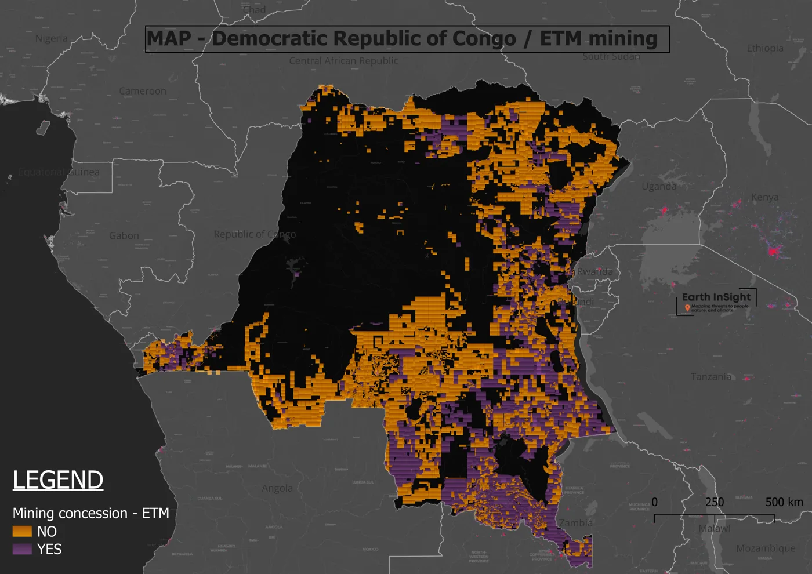

Prepare
Select country, operator, resource, concession type, source and area fields while preserving numeric and geometry types.
Explore mining-concession patterns with the right geographic context.
A GeoPandas and QGIS project examining concession records across Central Africa. This page brings together the existing maps and country summaries from the historical public notebook.
Select country, operator, resource, concession type, source and area fields while preserving numeric and geometry types.
Normalize resource labels and preserve the original strings so substitutions can be inspected.
Summarize recorded concession areas by country and an exploratory energy-transition mineral (ETM) grouping.
These are summed concession-record areas, which can overlap. They do not measure land actively mined, unique footprint, deforestation or environmental damage.
| Country | Total km² | ETM km² | Non-ETM km² |
|---|

The map selection changes the gallery image; it does not filter the country summary above.
The notebook accepts an authorized local GeoPackage path. Restricted research-drive locations are not embedded in the code.
The summaries here come from the saved output in notebook commit 53c6659. Existing map images are historical project artifacts.
A unique spatial footprint requires geometry union and an appropriate projection. Resource taxonomy also needs domain review.
The underlying GeoPackage is not bundled. This demo explores existing public outputs; it does not claim a fresh geospatial run or current concession ownership.